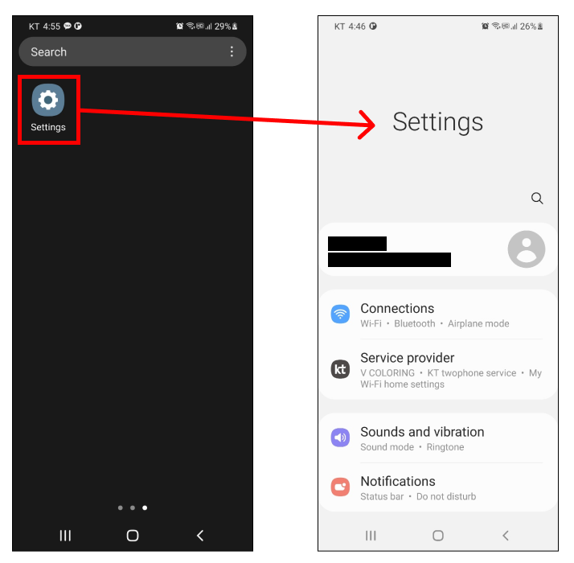
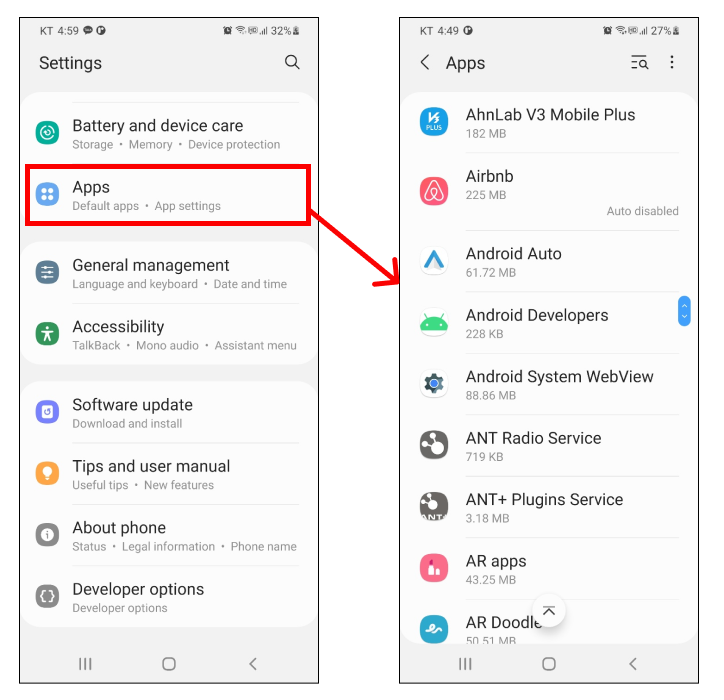
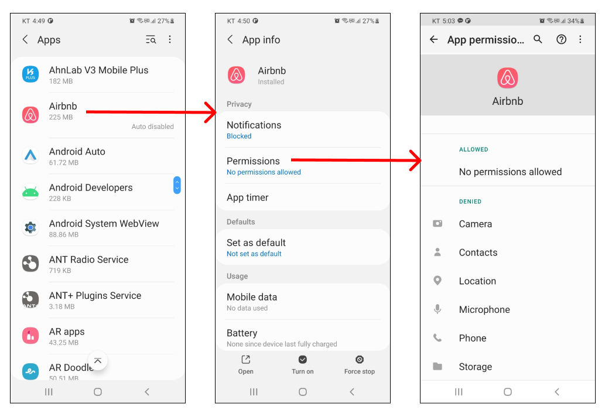
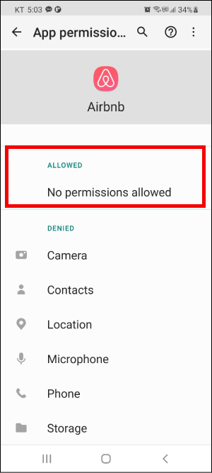
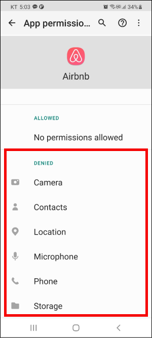
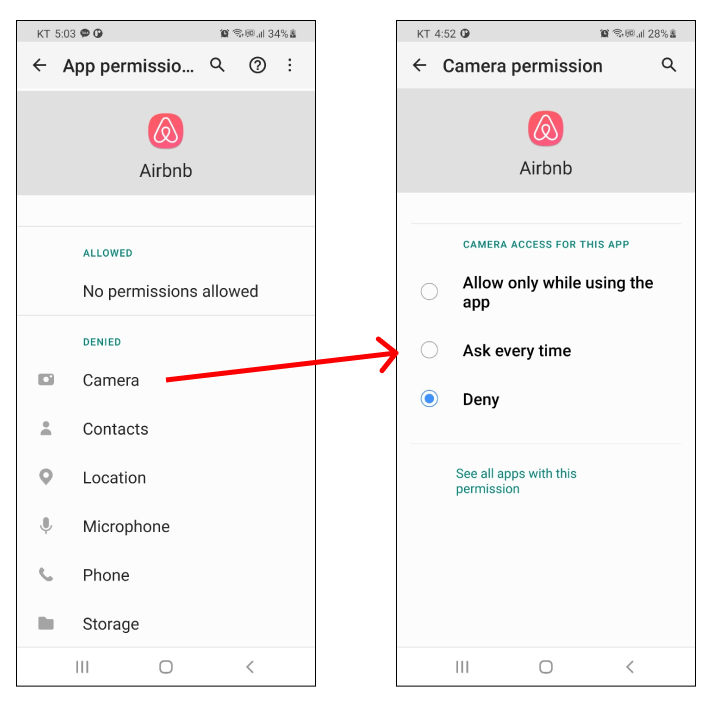
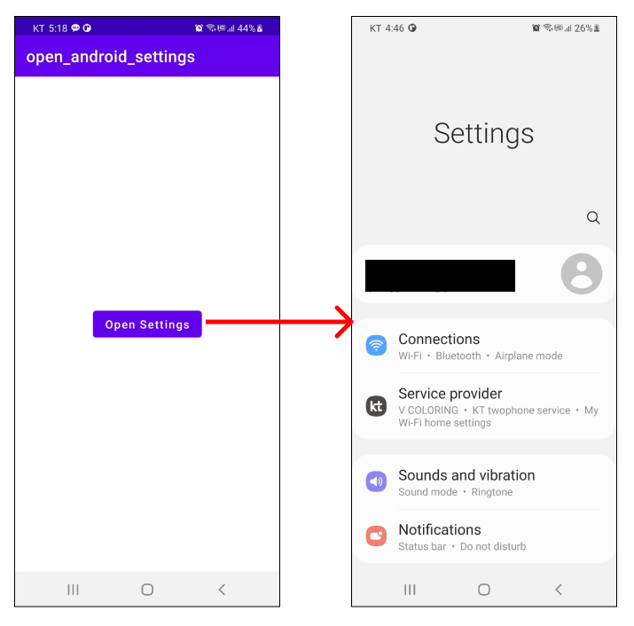
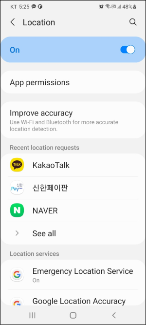
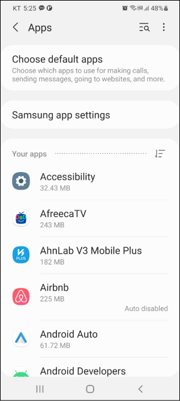
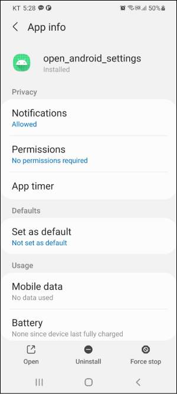

[Android] 권한 - (3) 액티비티에서 설정 앱 시작하기
설정 앱
설정(Settings) 앱에서는 안드로이드와 관련된 환경 설정을 할 수 있습니다.
설정 > 어플리케이션에서는 설치된 어플리케이션을 확인할 수 있습니다.

특정 앱을 선택하고 권한을 클릭하면 앱이 필요로 하는 권한을 확인할 수 있습니다.
ALLOWED 항목에는 허용된 권한이 포함됩니다.
DENIED 항목에는 거부된 권한이 포함됩니다.
DENIED 항목에 포함된 권한을 선택하면 권한을 부여할 수 있습니다.

액티비티에서 설정 앱 시작하기
인텐트(Intent)를 사용하면 액티비티에서 설정 앱을 바로 시작할 수 있습니다.
버튼을 누르면 설정 앱을 바로 시작할 수 있습니다.
1 | class MainActivity : AppCompatActivity() { |
설정 > 위치로 이동할 수도 있습니다.
1 | val intent = Intent(android.provider.Settings.ACTION_LOCATION_SOURCE_SETTINGS) |
설정 > 앱으로 이동할 수도 있습니다.
1 | val intent = Intent(android.provider.Settings.ACTION_APPLICATION_SETTINGS) |
설정 > 앱 > 특정 앱으로 이동할 수도 있습니다. 이 때는 인텐트에 패키지 이름을 추가해야합니다.
1 | val intent = Intent(android.provider.Settings.ACTION_APPLICATION_DETAILS_SETTINGS) |
